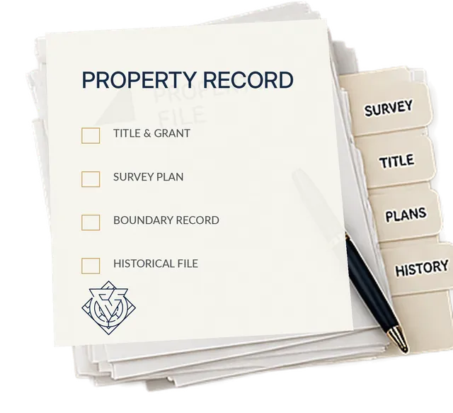

“I already have my title. Isn't that enough?”
Your current title describes today's registered record. Predecessor titles, subdivisions and historical plans may sit behind it. Following those references is a separate research task.
The guided decision
Understand the starting records. See the six work areas. Know the process and the limits. Then decide whether to commission the preparation.
A step at a time
Request a Property Fit CallThe video could not load. Try the play button again or open the video directly.
Educational and documentation support. You can also read the explanation below.
Why this work matters
The task is more than finding one old document. It is tracing the available history and preparing documentation around your property.
Your current title describes today's registered record. Predecessor titles, subdivisions and historical plans may sit behind it. Following those references is a separate research task.
One title points to another. The survey adds a different layer. The Crown Grant may be held in another archive. The task is to connect the pieces.
Which land did it cover? What reservations or exceptions appear? How does today's parcel trace back to it? One old document is only part of the file.
The mechanism
The current record and the predecessor references that begin your research.
The recorded parcel, its boundary information and its relationship to the title.
The original grant, including its terms, reservations and exceptions.
Records can be incomplete or unavailable. The research follows what exists; no historical fact or legal outcome is invented.
Built from the paper trail
Records may be unavailable or incomplete. The research follows the available evidence; no missing history or legal outcome is invented.
How the work moves forward
Tell us your province and relationship to the property. Staff review the requested scope; a request is not a confirmed booking.
Arrange a fit call where needed. Review the six work areas, records, applicable taxes and full terms before deciding.
After approved, verified payment, provide the required intake information. The available records and written scope guide the work.
Review the prepared documentation and carry out the signing, mailing or publication required by your scope.
What you commission
The Assert Crown Grant Documentation Package prepares these six work areas, subject to the available records and your written scope.
Trace predecessor references through the available property records.
Locate and examine the original grant, its terms, reservations and exceptions.
Review the current record and the survey together, within the agreed scope.
Prepare a working boundary description from available records. This is not a new survey.
Prepare the acceptance documentation described in your written scope.
Prepare the notice documentation in the agreed scope; you complete the required signing, mailing or publication steps.
Subject to available records and written scope. Additional title and survey copies are requested and paid for separately by the client directly from the Land Registry.
A working metes-and-bounds description is not a new professional survey and does not replace a licensed land surveyor. Notice documentation covers the applicable public/private notices in your scope; you complete the required signing, mailing, service and publication.
Your time. Your decision.
Do it yourself
Retrieve the records, follow the predecessor references, review the grant and prepare the documentation yourself.
Commission the preparation
Delegate the research and preparation within a written, property-specific scope.
Both are valid choices. The paid package is for owners who prefer to delegate. Requesting a fit call does not commit you to purchase.
Make an informed decision
A reason to consider it
You are the owner or authorized to act, want the available records connected and prefer help with the research and documentation.
Needs appropriate professional advice
This service is not legal advice, representation, a new survey or title insurance. It does not resolve Aboriginal title, guarantee an Indigenous land patent, remove title charges, prevent foreclosure or exempt property from tax.
Before commissioning
30–90 days after we receive your required information or documents and confirm the scope.
Chain of Title includes five Certificates of Title, one Survey and one Crown Grant.
You request and pay for additional Certificates of Title and Survey copies directly from the Land Registry.
Cancellation and a refund are available within 14 days of purchase.
Full service terms, applicable taxes and operational contact details require confirmation before launch. Educational and documentation support only; no outcome is guaranteed.
Questions before you decide
The six work areas listed on this page, for one property. Your written scope must confirm applicable taxes, record availability, any third-party costs and full service terms before payment.
Yes. You can retrieve and review the records yourself. The paid service is for owners who prefer to delegate the research and preparation. Requesting a fit call does not commit you to purchase.
The first step is a scope review. A call request is not a confirmed appointment. After an appointment is agreed, a calendar invitation can be provided for Microsoft Outlook, Google Calendar or Apple Calendar. This separate design preview does not send requests or book appointments.
Turnaround is 30–90 days after required information or documents are received and scope is confirmed. Chain of Title includes five Certificates of Title, one Survey and one Crown Grant. You request and pay for any additional title and survey copies directly from the Land Registry.
No legal outcome is promised. This is educational and documentation support, not legal advice, representation, surveying or title insurance. It does not resolve Aboriginal title, guarantee an Indigenous land patent, remove charges, prevent foreclosure or exempt property from tax. Seek appropriate professional advice for legal questions or deadlines.
Cancellation and a refund are available within 14 days of purchase. Review the full service terms and the written scope before paying. The published terms and operational contact details must be verified before launch.
Decision time
Before the research
Today’s title in a drawer. A survey somewhere else. Predecessor references unexplored. No organized historical file.
After the scoped work
Available history traced and reviewed. Records connected as the evidence allows. Working description where possible. Acceptance and notice documentation according to scope.
A description of the commissioned work, subject to record availability; not a promise of a legal outcome.
Your next step
You have seen the records, the work and the service limits. If you want the preparation handled, start with a property fit review.
A request is not a confirmed appointment or a commitment to buy. Review the written scope and full terms before approved payment.
